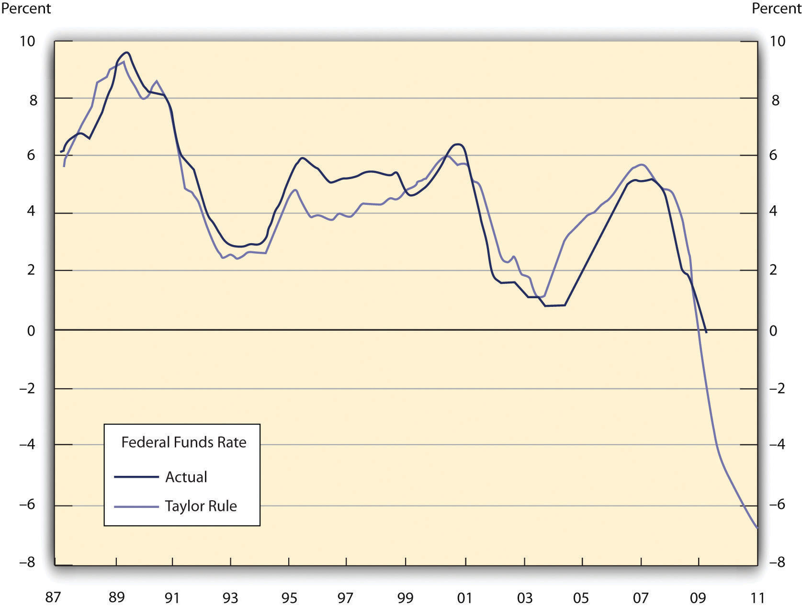
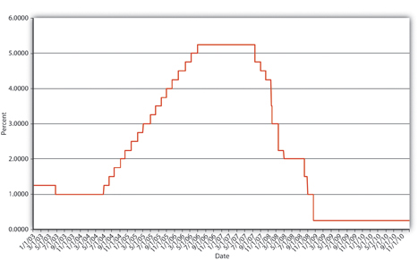
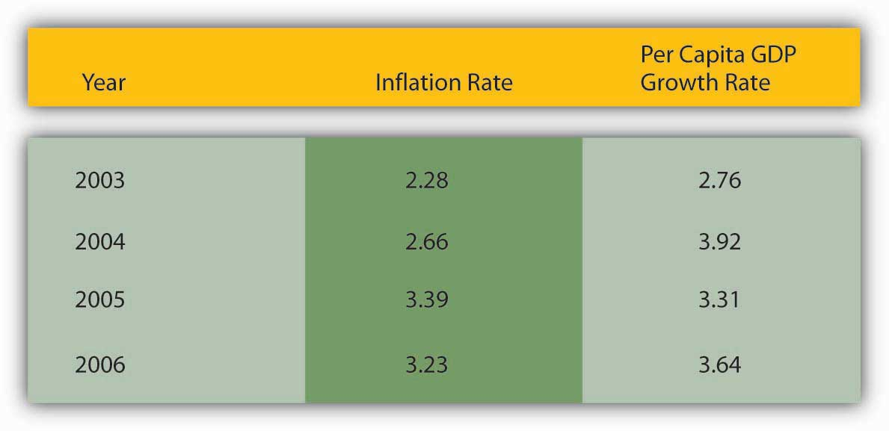

Many observers suspect that the Fed under Greenspan and Bernanke has followed the so-called Taylor Rule, named after the Stanford University economist, John Taylor, who developed it. The ruleIn this context, a monetary policy rule, an equation that tells central bankers what interest rate policies they should put in place given employment, output, inflation, and perhaps other macroeconomic variables. states that
fft = π + ff*r + ½(π gap) + ½(Y gap)where
fft = federal funds target
π = inflation
ff*r = the real equilibrium fed funds rate
π gap = inflation gap (π – π target)
Y gap = output gap (actual output [e.g. GDP] − output potential)
So if the inflation target was 2 percent, actual inflation was 3 percent, output was at its potential, and the real federal funds rate was 2 percent, the Taylor Rule suggests that the fed funds target should be
fft = π + ff*r + ½(π gap) + ½(Y gap) fft = 3 + 2 + ½(1) + ½(0) fft = 5.5If the economy began running a percentage point below its potential, the Taylor Rule would suggest easing monetary policy by lowering the fed funds target to 5 percent:
fft = 3 + 2 + ½(1) + ½(−1) fft = 3 + 2 + .5 + −.5 = 5If inflation started to heat up to 4 percent, the Fed should respond by raising the fed funds target to 6.5:
fft = 4 + 2 + ½(2) + ½(−1) = 6.5Practice calculating the fed funds target on your own in Exercise 1.
Use the Taylor Rule—fft = π + ff*r + ½(π gap) + ½(Y gap)—to determine what the federal funds target should be if:
| Inflation | Equilibrium Real Fed Funds Rate | Inflation Target | Output | Output Potential | Answer: Fed Funds Target |
|---|---|---|---|---|---|
| 0 | 2 | 1 | 3 | 3 | 1.5 |
| 1 | 2 | 1 | 3 | 3 | 3 |
| 2 | 2 | 1 | 3 | 3 | 4.5 |
| 3 | 2 | 1 | 3 | 3 | 6 |
| 1 | 2 | 1 | 2 | 3 | 2.5 |
| 1 | 2 | 1 | 1 | 3 | 2 |
| 1 | 2 | 1 | 4 | 3 | 3.5 |
| 1 | 2 | 1 | 5 | 3 | 4 |
| 1 | 2 | 1 | 6 | 3 | 4.5 |
| 7 | 2 | 1 | 7 | 3 | 14 |
Notice that as actual inflation exceeds the target, the Taylor Rule suggests raising the fed funds rate (tightening monetary policy). Notice too that as output falls relative to its potential, the rule suggests decreasing the fed funds rate (easier monetary policy). As output exceeds its potential, however, the rule suggests putting on the brakes by raising rates. Finally, if inflation and output are both screaming, the rule requires that the fed funds target soar quite high indeed, as it did in the early 1980s. In short, the Taylor Rule is countercyclical and accounts for two important Federal Reserve goals: price stability and employment/output.
The Taylor Rule nicely explains U.S. macroeconomic history since 1960. In the early 1960s, the two were matched: inflation was low, and growth was strong. In the latter part of the 1960s, the 1970s, and the early 1980s, actual ff* was generally well below what the Taylor Rule said it should be. In that period, inflation was so high we refer to the period as the Great Inflation. In the latter part of the 1980s, ff* was higher than what the Taylor Rule suggested. That was a period of weak growth but decreasing inflation. From 1990 or so until the early 2000s, a period of low inflation and high growth, the Taylor Rule and ff* were very closely matched. In the middle years of the first decade of the new millennium, however, the Fed kept ff* well below the Rule and thereby fueled the housing bubble that led to the 2007–8 crisis. Since then, the economy has been weak and little wonder: the Fed lowered rates to zero, but that was still well above the negative 7 percent or so called for by the rule. Figure 17.2 "The Fed’s feds fund target and the Taylor Rule since 1987" graphs the latter portion of the story.
Figure 17.2 The Fed’s feds fund target and the Taylor Rule since 1987
Source: St. Louis Federal Reserve Economic Data (http://research.stlouisfed.org/fred2) and T. Pettinger (http://econ.economicshelp.org/2009/05/taylor-rule-and-interest-rates.html).
Examine Figure 17.3 "The Fed’s feds fund target, 2003–2010" carefully. Assuming the Fed uses the Taylor Rule, what happened to inflation and output from mid-2003 until mid-2006. Then what happened?
Figure 17.3 The Fed’s feds fund target, 2003–2010
Assuming that the Fed’s inflation target, the real equilibrium federal funds rate, and the economy’s output potential were unchanged in this period (not bad assumptions), increases in actual inflation and increases in actual output would induce the Fed, via the Taylor Rule, to increase its feds fund target. Both were at play but were moderating by the end of 2006, freezing the funds target at 5.25 percent, as shown in Figure 17.4 "Inflation and per capita gross domestic product (GDP), 2003–2006". Then the subprime mortgage crisis, recession, and Panic of 2008 struck, inducing the Fed quickly to lower its target to 3, then 2, then 1, then almost to zero.
Figure 17.4 Inflation and per capita gross domestic product (GDP), 2003–2006
None of this means, however, that the Fed will continue to use the Taylor Rule, if indeed it does so.www.frbsf.org/education/activities/drecon/9803.html Nor does it mean that the Taylor Rule will provide the right policy prescriptions in the future. Richard Fisher and W. Michael Cox, the president and chief economist of the Dallas Fed, respectively, believe that globalization makes it increasingly important for the Fed and other central banks to look at world inflation and output levels in order to get domestic monetary policy right.See Richard W. Fisher and W. Michael Cox, “The New Inflation Equation,” Wall Street Journal, April 6, 2007, A11.
Foreign exchange rates can also flummox central bankers and their policies. Specifically, increasing (decreasing) interest rates will, ceteris paribus, cause a currency to appreciate (depreciate) in world currency markets. Why is that important?
The value of a currency directly affects foreign trade. When a currency is strong relative to other currencies (when each unit of it can purchase many units of foreign currencies), imports will be stimulated because foreign goods will be cheap. Exports will be hurt, however, because domestic goods will look expensive to foreigners, who will have to give up many units of their local currency. Countries with economies heavily dependent on foreign trade must be extremely careful about the value of their currencies; almost every country is becoming more dependent on foreign trade, making exchange rate policy an increasingly important one for central banks worldwide to consider.